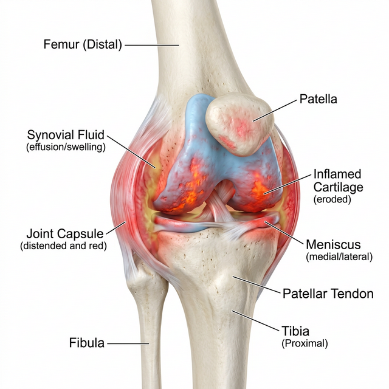
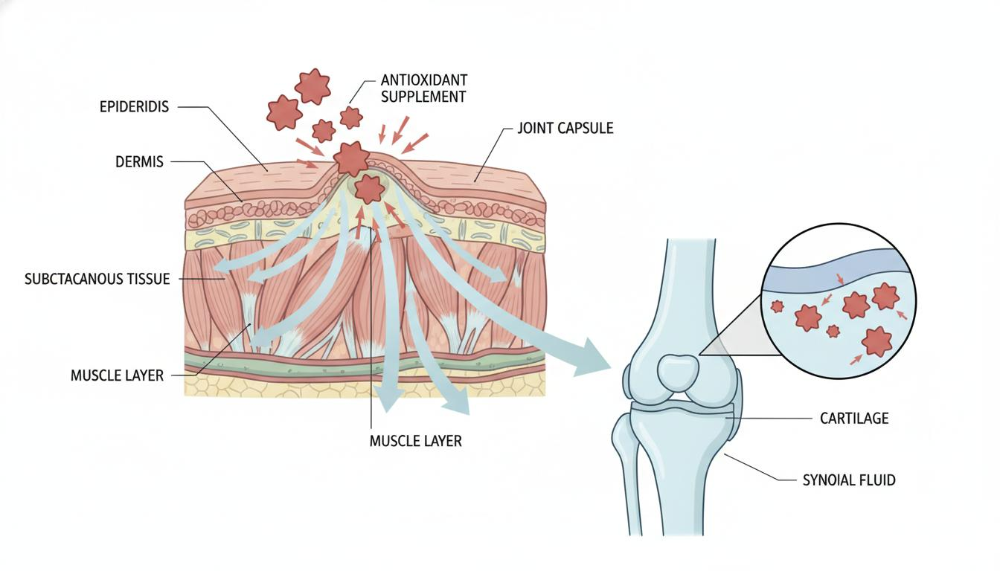
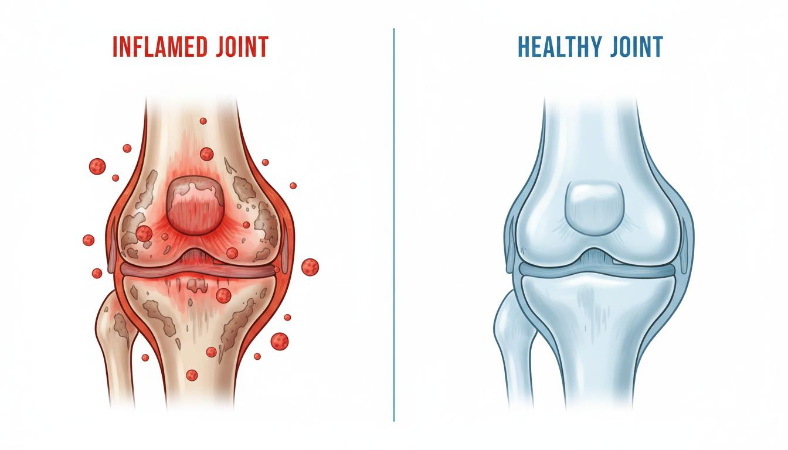
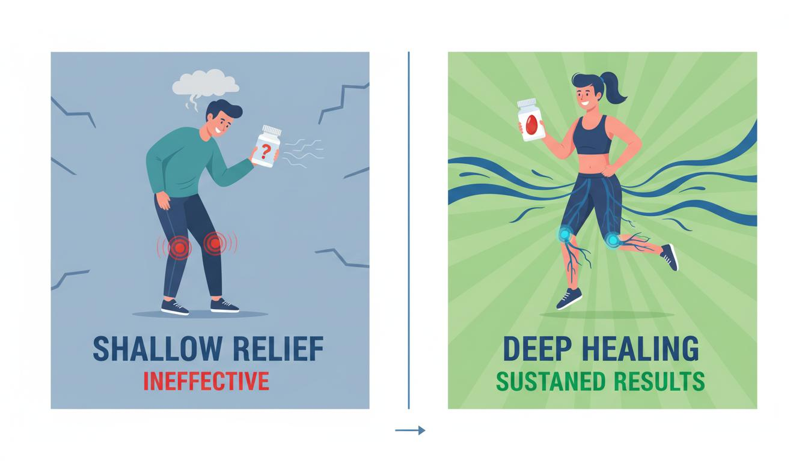
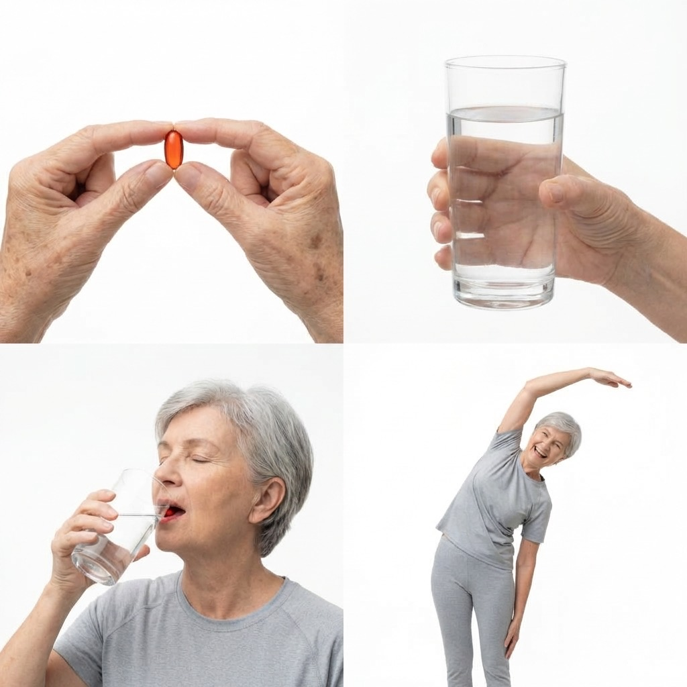
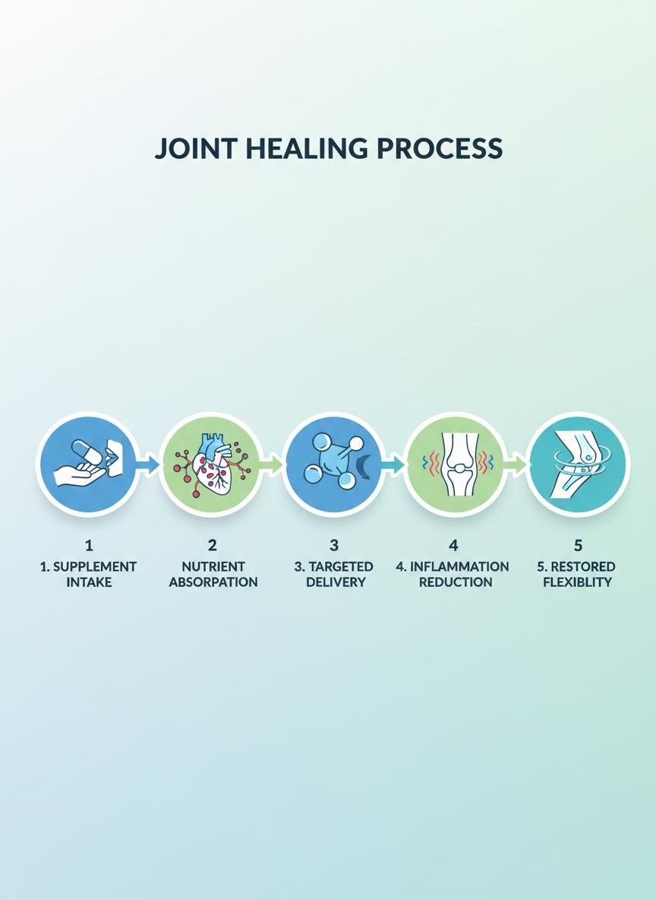
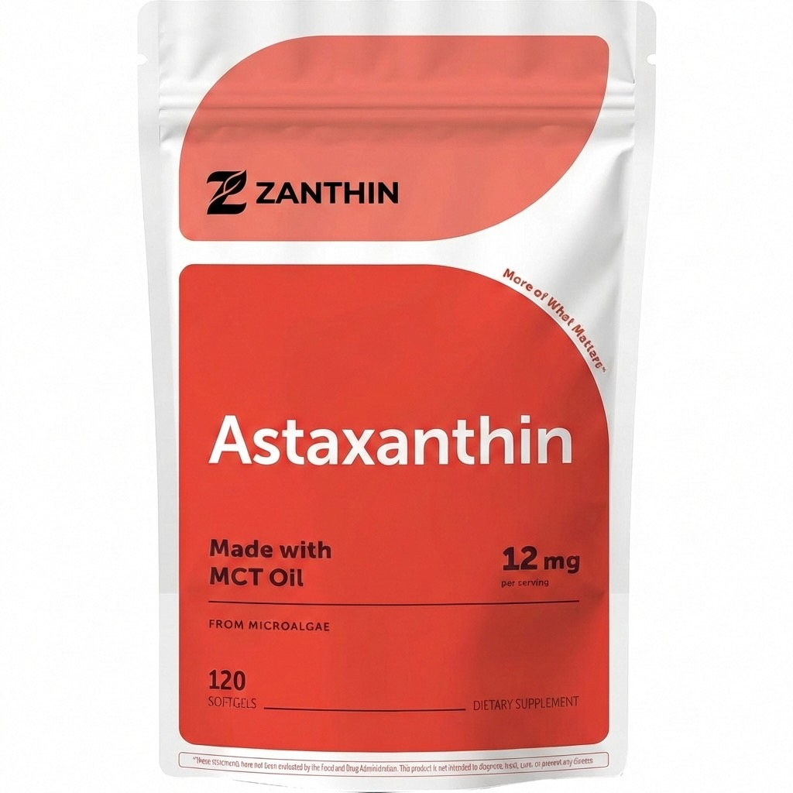
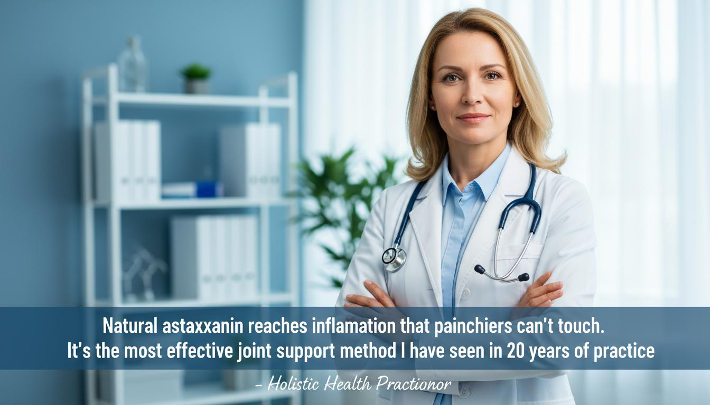

Zanthin is moving faster than expected.
Once this batch sells out, restocking is not guaranteed.
The Real Reason Your Joints Feel Worse In Your 40s And 50s Has Nothing To Do With Age
And everything to do with one cellular problem that glucosamine, turmeric, and collagen were never built to fix
By Veronica B. (Joint Recovery Patient)

By Veronica B.
February 2, 2025
I used to dread getting out of bed in the morning.
Not because I was tired
Because the moment my feet hit the floor, my knees would remind me exactly how old my body had decided to feel.
That familiar stiffness. That deep, grinding ache sitting right inside your joints.
The kind that doesn't care how well you slept or how much you stretched the night before.
I'm 54, but I feel like 157 when I wake up because of what I face every morning.
I'd grip the bedframe just to stand up straight. Walk to the bathroom like I was navigating ice. Stand at the kitchen counter waiting for my joints to warm up before I could do anything that resembled a normal start to the day.
My daughter stopped asking me to come on walks with her.
Not because she didn't want me there. Because she'd watched me slow down so many times that she felt guilty asking.
That was the part that got me. Not the pain itself. The shrinking. The slow, steady shrinking of what I was willing to do, where I was willing to go, what I was willing to say yes to.
Everyday, I could feel my freedom slowly running away from me, but that was until I discovered this.
And all it took was five seconds each morning.
If joint pain has taken over every avenue of your life, and you now feel ‘’trapped’’, this could be the most important thing you read today.
My Patient "Natalie" — And the Case That Changed Everything
Three years ago, a patient came to me desperate. I'll call her Natalie.
She wasn't sick. She wasn't doing anything "wrong."
But her joints had slowly stopped behaving the way they used to.
She had:
Joints that felt constantly "tired"

Persistent stiffness & irritation
Aching, uneven movement

Inflammation that cleared slowly
Grinding that suddenly deepened

Dozens of "normal" recommendations
My Time To Find Freedom Was Only Getting Shorter.
Chances are, many of you have tried multiple different solutions in search of salvation from your problem. I once did too.
I had tried everything ranging from Glucosamine and Vitamin C, all the way to Omega-3, and even Turmeric. I even took what my doctor recommended.
The same doctor who made me feel like nobody was really trying to figure out what was wrong. But no matter what I tried. No matter how long I stuck to it for, after 30 days, there would simply be no difference.
The only difference was in my wallet, which was now empty, and my time to solve this problem, which only became shorter.
However, one night, while diving into clinical studies on Joint Pain searching for some hope, I came across something that completely surprised me. Let me explain.
The Real Root Cause Behind Joint Pain in Women Aged 40+, and Why Nothing Seems To Work For You.
Most joint supplements fail for one simple reason. They never reach the cells that actually maintain your joints.

Chronic inflammation
Weakened joint protection
Cellular breakdown

Accelerated joint aging
But before I explain that, there is something most women in their 40s and 50s are never told. Something that changed how I understood everything.
Your joints and your hormones are connected. When estrogen starts to decline, it does not just affect your mood or your sleep or your weight. It affects your joints directly.
Estrogen plays a quiet but critical role in keeping inflammation under control inside your joints. It helps maintain the protective environment that your cartilage cells need to do their job.
When it drops, that protection weakens. Inflammation increases. The cellular environment inside your joints becomes more vulnerable.
And the everyday wear your body used to absorb without a second thought starts leaving a mark. This is why so many women feel like their joints changed overnight somewhere in their 40s.
It was not your imagination. It was not just age. It was a specific biological shift that nobody thought to mention.
What the Research Says
And here is where the problem lies. Not a single mainstream joint supplement was designed with this model in mind:

Chronic low-grade inflammation is now recognized as a primary driver of joint deterioration in clinical literature.
Glucosamine. Collagen. Turmeric. Fish oil. Every one of them assumes the joint environment is stable. For a woman in her 40s or 50s, it is not.
So they were already working against the odds before they even reached your joints. And even when they do reach your joints, they still fall short. Here is why.
But Here's the Worst Part:
Most People are Triggering Joint Pain — And Don't Know It
In reality, joint discomfort is being quietly triggered by everyday habits most people never connect to their bones.

Inside every joint, you have cells whose entire job is to maintain the cartilage that cushions your bones. They are called chondrocytes.
Those cells have a protective outer layer. Think of it like a skin around each cell. That layer controls everything. What gets in. What gets out. How well the cell repairs and maintains the cartilage around it.
Here's why mainstream choices were not built to reach the right place:
Glucosamine circulates near the joint. It never gets inside that protective cell layer where repair is actually controlled.

Collagen gives your body raw material. But it stops short of the cellular level where it would actually make a difference.
Turmeric barely survives the journey. Most of it breaks down before meaningful amounts ever reach joint tissue.
So I Went Searching for a Solution…
When I realized how quickly my body was changing, and how much of my life I was missing out on, I knew I needed a better way to stop the decline before it became permanent.
I experimented with every supplement, extract, and "miracle cure" on the market…
Some helped for a few days. Most did nothing at all.
Then I found what actually worked.
Introducing: Zanthin
Simple. 12mg of natural astaxanthin. Sourced from the only microalgae that produces the molecule in its most concentrated natural form.

Zanthin is unlike anything you've seen. Why?
Starting with the source, the dose, and the delivery.
The Source
Zanthin uses only natural astaxanthin sourced directly from Haematococcus pluvialis. Not synthetic.
The Dose & Delivery
12mg of clinical strength astaxanthin per softgel. Infused with MCT oil for maximal absorption.
How Zanthin™ Works
Instead of just masking the pain, Zanthin™ supports your joints where the cell-level breakdown actually begins.
Targets inflammation systemically (not just on the surface)
Breaks through damaged barriers other treatments can't penetrate

Supports natural joint recovery pathways

Maintains the clinical dose needed for cellular health
How Zanthin Allowed Me To Be Myself Once Again.
Zanthin was introduced to me by a friend at work, who had been facing the exact same problems as me. I’ll admit, when I first saw Zanthin, I was skeptical, and I’m sure currently, many of you are also.
We’ve spent not only our hard earned money, but also our time on trying multiple different solutions. But, nothing ever seemed to work for us. No matter how much we spent, or how long we tried. So naturally, who wouldn’t be skeptical?
However… I did eventually decide to try. After seeing that they had a Lifetime Free Returns Policy, I decided to give it a try especially since I hadn’t seen any other brand do that.
Worst case scenario? I try it for a whole month, and if it doesn’t work I still get my money back. Even if the containers are empty. But more importantly, I had tried almost everything out there, and I had finally found something that seemed to make sense.
How Zanthin Is Already Helping Thousands.
Veronica B | Verified Buyer
‘’Rheumatoid arthritis for 6 years. Celebrex every morning. My doctor kept saying my inflammation markers were stubbornly elevated. Three months on Zanthin and my CRP dropped for the first time since diagnosis. My morning stiffness used to last until noon. Now it's gone before I finish my first cup of coffee. I don't know why no one told me about this sooner.’’
Rebecca S. | Verified Buyer
‘’Osteoarthritis in both hips and my left shoulder. The orthopedist said hip replacement within 2 to 3 years. That was 18 months ago. I started Zanthin 14 months ago. My last imaging showed the deterioration plateaued. No new bone spurs. No additional cartilage loss. His exact words were I don't see the progression I expected. I know exactly why he doesn't see it.’’
Tanya M. | Verified Buyer
‘’Both knees are bone on bone. Retired firefighter. 34 years of climbing ladders and carrying gear. On Lipitor and Lisinopril. Eight pills every morning and my body was still falling apart. Two months on Zanthin and my knees stopped waking me up at 3 AM. The last lipid panel showed LDL dropped 18 points. Blood pressure 128/78. Lowest reading in three years.’’
How You Can Get Zanthin Today
Normally, Zanthin costs $79.99 which is the price I had to pay. However, at the moment Zanthin is doing a whole site sale.
For a limited time, you won’t even have to pay 50% of that price. Zanthin will cost you $31.99 today. That’s equivalent to around $1.06 a day.
Notice: STOCK IS LOW. We won’t have any stock left by the end of the week.
What Your Life Could Look Like Starting This Week.
Picture your next Monday morning. No gripping the bedframe. No shuffling to the bathroom. No standing at the kitchen counter waiting for your joints to catch up with the rest of you.
Just getting up. And getting on with your day. Picture saying yes to the walk your daughter asked about. Sitting on the floor with your grandkids without thinking twice about how you'll get back up. Moving through your day without your joints announcing themselves with every step.
Picture going to bed at night without dreading the morning. Without lying there wondering whether tomorrow is going to be a good day or a bad one. Without the quiet background anxiety of a body you no longer fully trust.
That version of your life is not out of reach. That is what happens when the cells maintaining your cartilage finally get what they need to do their job properly. For thousands of women using Zanthin, this is already their reality.
Women who tried glucosamine, turmeric, collagen, and every other supplement on the shelf. Women who had given up on feeling different. Women who, two weeks into their first bottle, got out of bed one morning and realised something had shifted.
It was not a dramatic overnight transformation. It was something quieter than that. And more powerful. It was just freedom. Slowly coming back. You have absolutely nothing to lose to find out if it can be yours.
Zanthin comes with a lifetime money back guarantee. Every penny returned. No questions asked. Even if the bottle is empty. The pain has already taken enough from you. The only question is how much longer you are willing to let it.

Veronica B.
Reclaimed her freedom in February 2025
NOTICE:
Zanthin packets are selling out fast.
We've already sold out 5 times this year.
IMPORTANT NOTE:
Zanthin is NOT available on Amazon, eBay, or in stores. To ensure you receive the authentic product with clinical-strength ingredients, only order from our official website.
MONEY
BACK
SHIPPING
SAFE